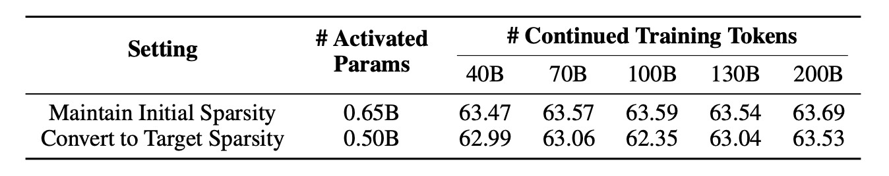
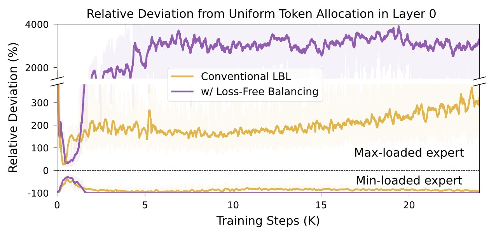
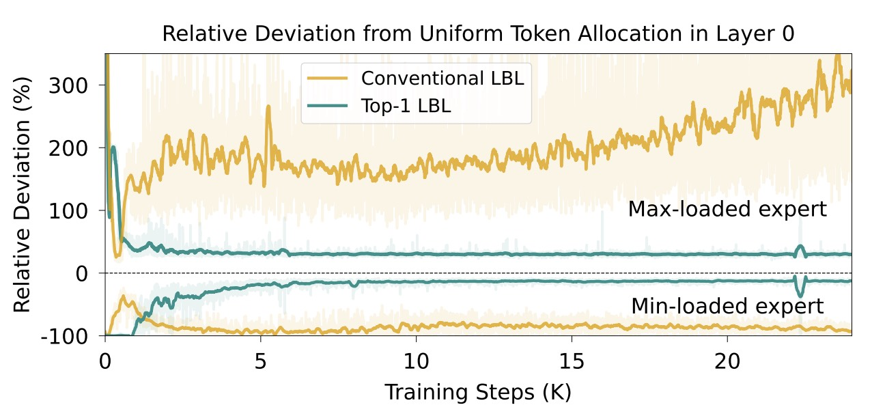

Effect of Progressive Sparsification Scheduling
The proposed progressive sparsification schedule not only improves expert load balance during training but also preserves nearly the same performance.
As shown in Table 3, we compare two checkpoints trained for 6T tokens: one continuing with the initial sparsity and the other switched to the target sparsity.
Notably, although converting to the target sparsity loses 0.15B activated parameters (approximately 25%), the resulting performance is largely preserved.

Table 3: Effect of progressive sparsification scheduling on model performance.
Comparison of Different Load Balancing Strategies
We also experimented with an auxiliary-loss-free approach to maintain load balancing, which is adopted in DeepSeek-V3.
However, we observe that this loss-free approach can cause significant load imbalance in the lower layers under high MoE sparsity. As shown in Figure 3, introducing this loss-free balancing strategy leads to the min-loaded expert consistently receiving zero tokens after 2K training steps, while the max-loaded expert is allocated nearly 40× the tokens expected under uniform allocation.
Further analysis reveals that the bias terms introduced by this strategy in the lower layers will continually increase as training progresses, eventually dominating the gating scores. As a result, the expert with the highest bias receives the overwhelming majority of tokens.

Figure 3: Comparison of different load balancing strategies.
Exploring Native Load Balancing under High Sparsity
To achieve native load balancing under high sparsity without modifying the model architecture, we introduce a new LBL variant, termed top-1 LBL.
The core idea of this variant is to directly optimize the L2 norm of the token allocation fraction across all experts, theoretically avoiding the optimization bias present in conventional LBL. However, since the token allocation fraction is non-differentiable, we use the differentiable gating probabilities as an effective approximation, obtained by applying a temperature-scaled softmax to the routing logits. Formally, the top-1 LBL is defined as:
$$\mathrm{LBL}_{\mathrm{top\text{-}1}} \;=\; \frac{N_E \sum_{i=1}^{N_E} \hat{f}_i^2}{\bar{p}_{\mathrm{top\text{-}1}}},$$
where the token allocation fraction \( \hat{f}_i \) for expert \( i \) is computed as
$$\hat{f}_i \;=\; \frac{1}{N_B}\sum_{j=1}^{N_B} p_{i,j}, \qquad
p_{i,j} \;=\; \frac{\exp(\mathrm{logits}_{i,j}/\tau)}{\sum_{k=1}^{N_E}\exp(\mathrm{logits}_{k,j}/\tau)}.$$
The average top-1 probability \( \bar{p}_{\mathrm{top\text{-}1}} \) in the denominator is defined as
$$\bar{p}_{\mathrm{top\text{-}1}} \;=\; \frac{1}{N_B}\sum_{j=1}^{N_B} \operatorname{Top\text{-}1}\big(p_{i,j}\big).$$
Here, \(N_B\) is the number of tokens in a batch, \(\mathrm{logits}_{i,j}\) is the routing logit of expert \(i\) for token \(j\), and \(\tau\) is the softmax temperature.
As shown in Figure 4, applying top-1 LBL significantly improves load balancing under super-high sparsity, steadily approaching a uniform token allocation. However, we also find that overly balanced expert utilization may sacrifice model performance. We attribute this issue to the inherent trade-off between load balance and performance, and leave improving this trade-off as an important direction for future work.

Figure 4: Comparison between top-1 LBL and conventional LBL.